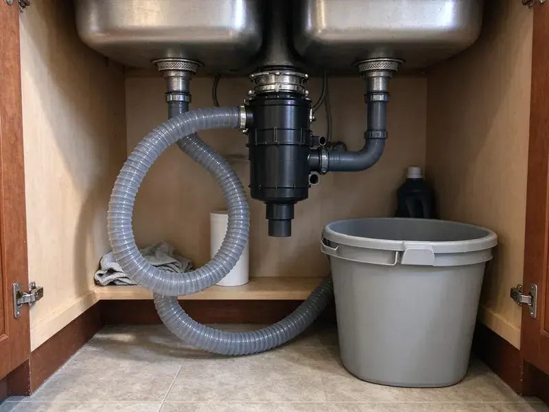

Grease Trap Cleaning in Anchorage, AK
CKN Plumbing pumps and cleans grease traps and interceptors for restaurants and commercial kitchens across Anchorage, AK, with documented service every visit.
- Fast Response for Overflows
- Licensed Plumbers
- Code Compliant
- Scheduled Maintenance Plans

Stop grease backups and odors before they shut you down in Anchorage, AK.
Call CKN Plumbing today for reliable, professional grease trap services tailored to your commercial needs.
Professional Grease Trap Cleaning for Restaurants in Anchorage, AK
CKN Plumbing specializes in thorough grease trap cleaning for commercial kitchens across Anchorage, AK. We understand the heavy demands placed on plumbing systems in restaurants and food service establishments, where fats, oils, and grease (FOG) can quickly accumulate and cause severe blockages.
Our expertise includes:
- Full pump-outs of indoor traps and large outdoor interceptors
- Service manifests and logs for municipal FOG programs
- Commercial kitchen grease trap maintenance

Additional Kitchen Plumbing Services in Anchorage, AK
Our kitchen plumbing services in Anchorage, AK cover sinks, disposals, dishwashers, and grease traps so your kitchen keeps running without backups or leaks.


Customers
Why Choose CKN Plumbing for Grease Trap Cleaning in Anchorage, AK?
A full grease trap lets grease escape into the sewer, where it hardens and causes blockages and fines. Regular cleaning keeps your trap working and your kitchen up to code.
- Compliance Records, You receive a dated service record with volumes removed and the condition of the unit.
- Code Compliance, Many cities, including Anchorage, have detailed plumbing codes and health department regulations regarding grease trap maintenance for commercial establishments.
- Flexible Scheduling, We clean before opening or after close so your kitchen never gives up service time.
Citywide Coverage
From single-location cafes to multi-unit restaurant groups, we serve kitchens across Anchorage. We can coordinate cleanings for several locations on one recurring schedule.
Experienced Team
Our plumbing technicians are highly trained and experienced in all aspects of grease trap cleaning and maintenance. They understand the differences of different trap sizes and types, from small under-sink units to large outdoor interceptors.
Safety-First Approach
Our crews use proper confined space practices and never enter large interceptors without the right equipment. We replace lids securely so staff and customers are protected from open access points.
Trusted Certified Anchorage Plumbing Services Professionals
At CKN Plumbing, we take pride in providing licensed, certified plumbing services throughout Anchorage, AK. Backed by recognized industry credentials, our experienced plumbers combine technical skill with genuine customer care. Whether it is repair, installation, or maintenance, we follow strict safety and quality standards to deliver lasting results you can trust.
Call Us Now PHCC Plumbing Contractor Recognition
PHCC Plumbing Contractor Recognition Better Business Bureau (BBB) Accreditation
Better Business Bureau (BBB) Accreditation Angi Certified Pro
Angi Certified Pro ISO 9001 Quality Management Certification
ISO 9001 Quality Management CertificationThorough Grease Trap Cleaning Services in Anchorage, AK
Emergency Grease Trap Cleaning in Anchorage, AK
A full grease trap can cause sinks to back up, floor drains to overflow and foul odors to fill the dining room. We respond quickly to emergency calls and can often clear the problem the same day. Our crews pump the trap, clear the lines and check for downstream blockages. If the sewer line is also clogged, we can jet it during the same visit. Fast service helps you get back to serving customers.

Grease Trap Cleaning Cost in Anchorage, AK
Cleaning cost depends on trap size, how full it is and how often it is serviced. Small indoor traps generally cost less per visit than large outdoor interceptors that require a vacuum truck. Traps that are rarely cleaned take longer because hardened grease must be broken up. A regular schedule often lowers the cost per visit. We give you clear pricing before we start.
Grease Trap Inspection and Repair in Anchorage
During our cleaning service in Anchorage, our plumbers also perform a visual inspection of your grease trap for any signs of damage, leaks, or component failure. If we identify any issues, such as a broken baffle or a failing lid seal, we can often provide same-visit repair solutions. Addressing minor repairs proactively prevents larger, more costly problems down the line.
Cost-Effective Grease Trap Solutions in Anchorage, AK
CKN Plumbing offers fair and transparent pricing for all grease trap cleaning services in Anchorage, AK. We provide upfront estimates before any work begins, so there are no surprises. Investing in regular, professional cleaning is significantly more cost-effective than dealing with emergency drain repairs, fines from health departments, or business closures due to plumbing failures.
Grease Trap Cleaning for Restaurants in Anchorage, AK
Restaurants generate significant amounts of fats, oils, and grease, making regular grease trap cleaning essential. CKN Plumbing provides tailored cleaning schedules to meet the specific demands of your restaurant in Anchorage, AK, from fast-food establishments to fine dining. We help you maintain a sanitary kitchen, prevent plumbing emergencies, and comply with all local health department requirements. This proactive approach saves you money and headaches in the long run.
Compliance Documentation for FOG Programs in Anchorage, AK
Cities with fats, oils and grease programs often require restaurants to keep cleaning records on site. After every service we provide a record showing the date, volume removed and condition of the unit. These records help you during inspections and can protect you from fines. We can also send copies directly to your manager or corporate office. Good documentation shows you are doing your part to protect the sewer system.
Compliance & Documentation in Anchorage
Many local and state regulations in Alaska require businesses to maintain their grease traps and provide documentation of service. CKN Plumbing not only cleans your grease trap but also helps you maintain proper service records. We can provide documentation of pumping and disposal, helping your Anchorage business stay compliant with environmental and health department mandates. This service minimizes your risk of non-compliance penalties.

Outdoor Grease Interceptor Pumping in Anchorage, AK
Large in-ground interceptors require a vacuum truck to fully pump out grease, water and settled solids. We open each compartment, pump it down and use high-pressure water to break up hardened grease on the walls. We inspect inlet and outlet tees, baffles and risers while the tank is empty. Warm weather can make grease odors stronger, so we also check lid seals. A complete pump-out brings back full retention capacity.
Grease Trap Cleaning Near Me in Anchorage, AK
When you search for 'grease trap cleaning near me' in Anchorage, AK, CKN Plumbing is your trusted local expert. We are very familiar with the commercial plumbing needs of businesses throughout the area, understanding the local regulations and common issues that affect commercial kitchens.
When you search for 'grease trap cleaning near me' in Anchorage, AK, CKN Plumbing is your trusted local expert. Our team is strategically located to provide fast and efficient service across the whole Anchorage area. We understand the plumbing challenges faced by businesses and homeowners in our community.
CKN Plumbing at a Glance
- Fully licensed plumbing team covering Anchorage, AK
- Same-day appointments and 24/7 emergency response
- Clear written estimates, no hidden fees
- 4.9-star rated by 309+ Alaska customers
Anchorage Map
Anchorage Information
- Population
- 286,075
- Area codes
- 907/928/406
- Service area
- Anchorage and communities within 40 miles
- Nearby
- Knik-Fairview, Gateway, South Lakes, Wasilla
For homes and businesses in Anchorage, AK, diligent grease trap cleaning is crucial to combat the impact of cooking oils and fats that solidify in pipes. Short, mild summers give owners a narrow window for outdoor plumbing work, so sewer and well projects are often scheduled well ahead.
Expert Services
Trust our professionals for reliable CKN Plumbing solutions in Anchorage, AK.
Our Specialized Plumbing Services in Anchorage, AK
At CKN Plumbing, we provide a complete range of plumbing services across Anchorage, AK. From leak detection to full system installations, our team ensures fast, precise, and affordable service for both residential and commercial properties. Explore our core services below:


How Our Grease Trap Cleaning Process Works in Anchorage, AK
Our complete grease trap cleaning process in Anchorage, AK is designed for efficiency and effectiveness, from start to finish.
Request a Quote
Call (928) 470-9007 and tell us your trap size, location and current cleaning schedule. We give you pricing and set a time that works around your service hours.
Pump and Scrape
Our crew pumps out grease, water and solids, then scrapes walls and baffles. We inspect tees, lids and flow control while the unit is empty.
Document and Schedule
We reassemble the trap, clean the area and leave a dated service record. Then we set your next cleaning so you stay on schedule.
Frequently Asked Questions About Grease Trap Cleaning in Anchorage
The cost of grease trap cleaning in Anchorage, AK varies based on the size of the trap, its accessibility, and the amount of accumulated FOG. Typically, prices can range from $200 for smaller under-sink units to over $1,000 for large outdoor interceptors. We provide transparent, upfront quotes after assessing your specific needs.
Neglecting commercial grease trap cleaning in Anchorage can lead to severe drain blockages, sewage backups, foul odors impacting your business, and potential fines from the local health department or wastewater authority. It can also cause expensive plumbing emergencies and business downtime.
Yes, we provide a service record after every cleaning. It includes the date, volume removed and condition of the trap, which you can show inspectors.
While cleaning services don't usually come with a 'warranty' in the traditional sense, CKN Plumbing guarantees the quality and effectiveness of our work. If you experience issues directly related to our cleaning within a reasonable timeframe, we will address them promptly. We stand by our professional standards.
We haul it to approved processing or disposal facilities. Proper disposal is required by law and protects the sewer system and the local environment.
While small residential grease interceptors might be cleaned by a homeowner, it's generally not recommended. Commercial grease traps require specialized equipment for proper FOG removal and safe disposal, which is mandated by Anchorage regulations. Professional cleaning ensures compliance and thoroughness.
Yes, our technicians are trained to service all major brands and types of grease traps and interceptors, including units from Thermaco, Zurn, Josam, and any custom-built systems. Our expertise covers both internal and external installations common in Anchorage commercial properties.
The frequency of grease trap cleaning depends heavily on usage. Commercial kitchens often require cleaning every 1 to 3 months, while residential units might only need it once a year or less. Local Anchorage health codes for restaurants may mandate specific intervals.
What People Are Saying About Our Plumbing Experts?

Sofia M.
Two new toilets installed in one visit, no mess left behind, and the tech even adjusted a faucet he noticed was dripping. Fair pricing and really friendly.
Toilet Installation · North Lakes, AK
Patricia H.
We had a slab leak that two other companies could not find. CKN Plumbing located it in under an hour, explained our options, and the price matched the quote to the dollar.
Slab Leak Repair · North Lakes, AKLaura S.
I scheduled a water heater replacement, and the team made the process smooth and affordable. The new unit works perfectly, and they cleaned up after completing the job.
Water Heater Replacement · Palmer, AK
Mark T.
When our office needed drain cleaning, CKN Plumbing provided quick, reliable service. The plumber arrived on time and made sure every drain flowed perfectly before leaving. Very satisfied.
Drain Cleaning · North Lakes, AK
Robert G.
The trenchless sewer replacement saved our front yard. They walked us through the camera inspection footage first so we knew exactly what we were paying for.
Sewer Line Replacement · South Lakes, AK
Daniel K.
A pipe burst at 11 pm and they actually answered. The plumber showed up within the hour, shut everything down, and had us back to normal the next morning. Could not ask for more.
Emergency Plumbing · Knik-Fairview, AK